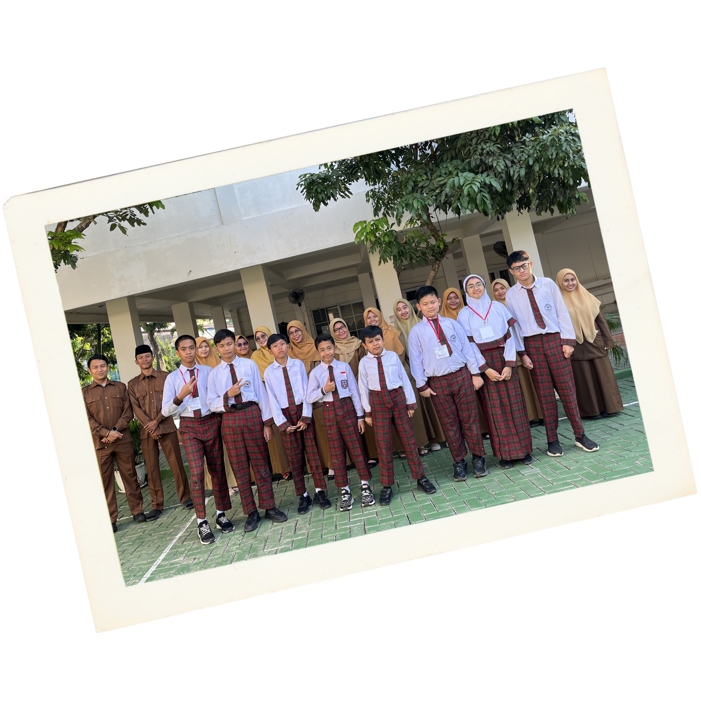
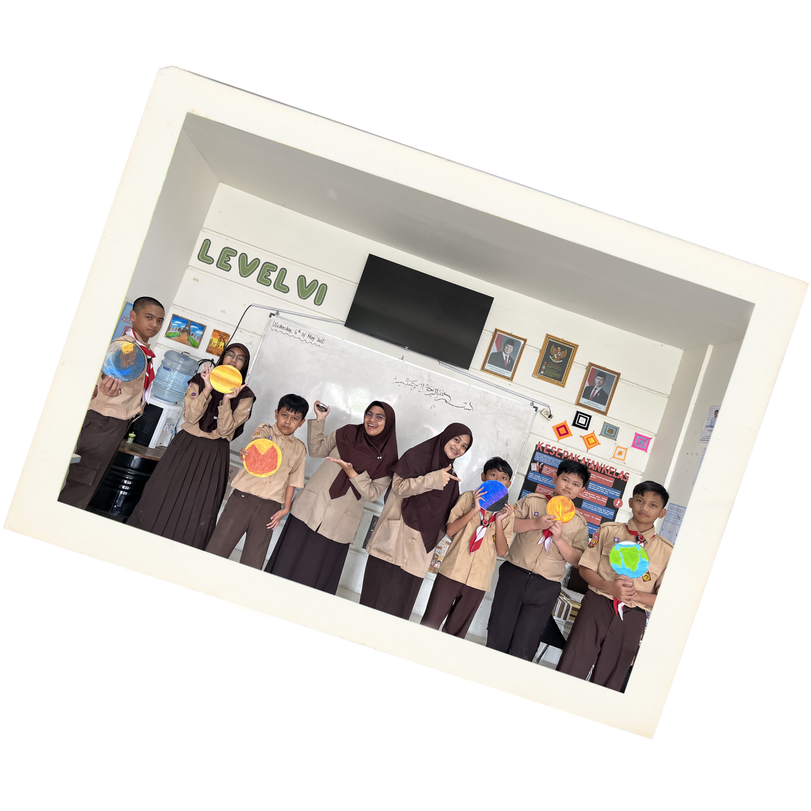

Assalamualaikum
Warahmatullahi
Wabarakatuh
Infinite 8


Memories
Foto
Foto
Foto
Foto
Foto
Foto
Infinite 8
QS Luqman : 12
بِسْمِ اللهِ الرَّحْمٰنِ الرَّحِيْمِ
وَلَقَدْ اٰتَيْنَا لُقْمٰنَ الْحِكْمَةَ اَنِ اشْكُرْ لِلّٰهِ
ۗوَمَنْ يَّشْكُرْ فَاِنَّمَا يَشْكُرُ لِنَفْسِهٖۚ وَمَنْ كَفَرَ
فَاِنَّ اللّٰهَ غَنِيٌّ حَمِيْدٌ
Sungguh, Kami benar-benar telah memberikan hikmah kepada Luqman,
yaitu, “Bersyukurlah kepada Allah! Siapa yang bersyukur,
sesungguhnya dia bersyukur untuk dirinya sendiri. Siapa yang
kufur, sesungguhnya Allah Mahakaya lagi Maha Terpuji.”
UNDANGAN
Kepada Yth.
Bapak/Ibu Wali Murid
✦
Dengan penuh rasa syukur, kami mengundang Bapak/Ibu untuk menghadiri
acara:
TASYAKUR KELULUSAN
WISUDA TAHFIDZ
&
HAFLAH AKHIRUSSANAH
ANGKATAN II
SD ISLAM INTAN PRIMA
Yang diselenggarakan pada waktu dan tempat berikut:
MINGGU
21JUNI2026
10.00 WIB
BANDAR DJAKARTA
Jl. Bulevar Ahmad Yani Blok M, Marga Mulya,
Kec. Bekasi Utara